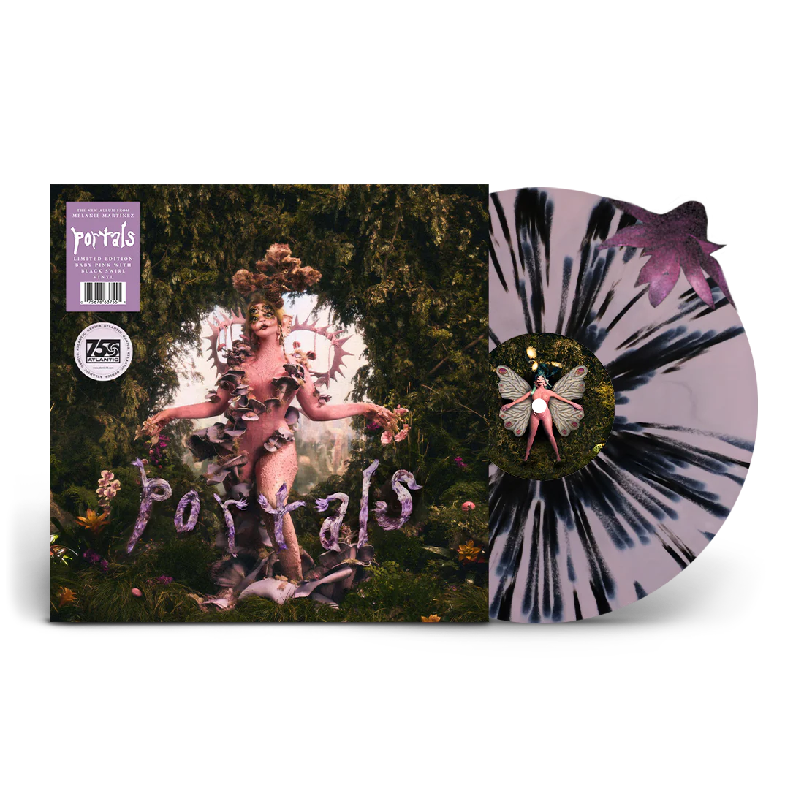
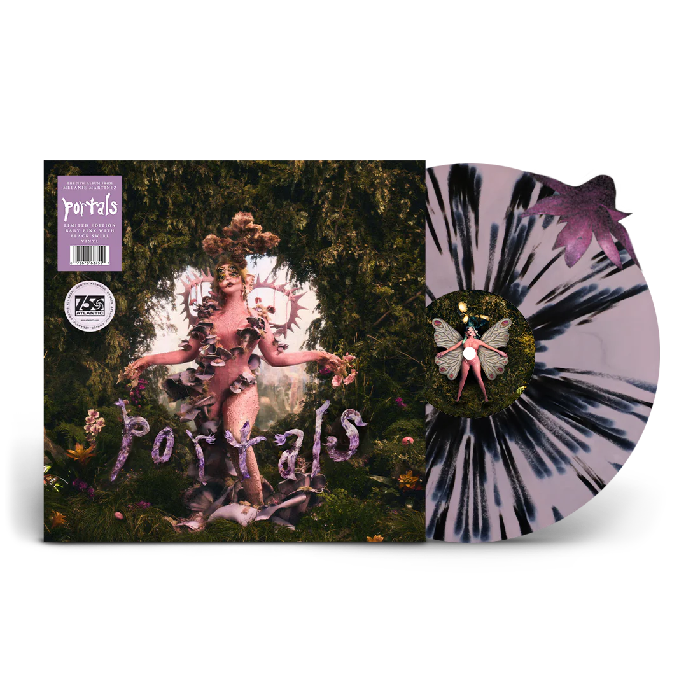

PORTALS
El cuarto y más recién álbum que a sacado Melanie, tiene nuevos géneros agregados a su estilo combinando Rock - ElectroPop - Ambient - Trap - Pop Punk - Pop Experimental - Alternativo, teniendo una gran estrategia ya que PORTALS a diferencia de los álbumes de CRYBABY y K-12 que se centran en la historia de CRYBABY este habla sobre la muerte y la vida que rodean a CRYBABY mostrando a lo que pareciera su reencarnación una nueva personaje, alguien nuevo, a alguien renacido.
"Portals grita que la muerte es vida, que la vida es muerte, que la muerte es vida, que la vida es muerte, un bucle continuo, un cÃrculo" —Melanie Martinez
La creación de PORTALS fue un giro inesperado para todos, porque después de años Melanie borró todos sus post en Instagram, y cambió la miniatura de todos sus videos en Youtube por un hongo con un corazón el cuál tenÃa tallado "RIP Crybaby" en su interior, dando a entender la muerte de personaje, posteriormente empezó a subir varios snippets junto a videos, en los cuales se relataba el nacimiento de una criatura color rosa, la cuál es, la reencarnaación de Crybaby y la nueva cara de Melanie, siendo ahora está la nueva atracción para el público, además de las letras y algunas pistas de sus nuevas canciones que a los fans impresionaba por sus letras más profundas que más anteriores de sus álbumes.
Su lanzamiento oficial fue el 31 de marzo de 2023, siendo uno de los más amados ya que combina una estética de temas psicológicos, la muerte, temas serios de la mujer, fantasÃa, extraterrestres y mucho más, es uno de los álbumes más impactante, , contando con 13 canciones y tres deluxe.


 
